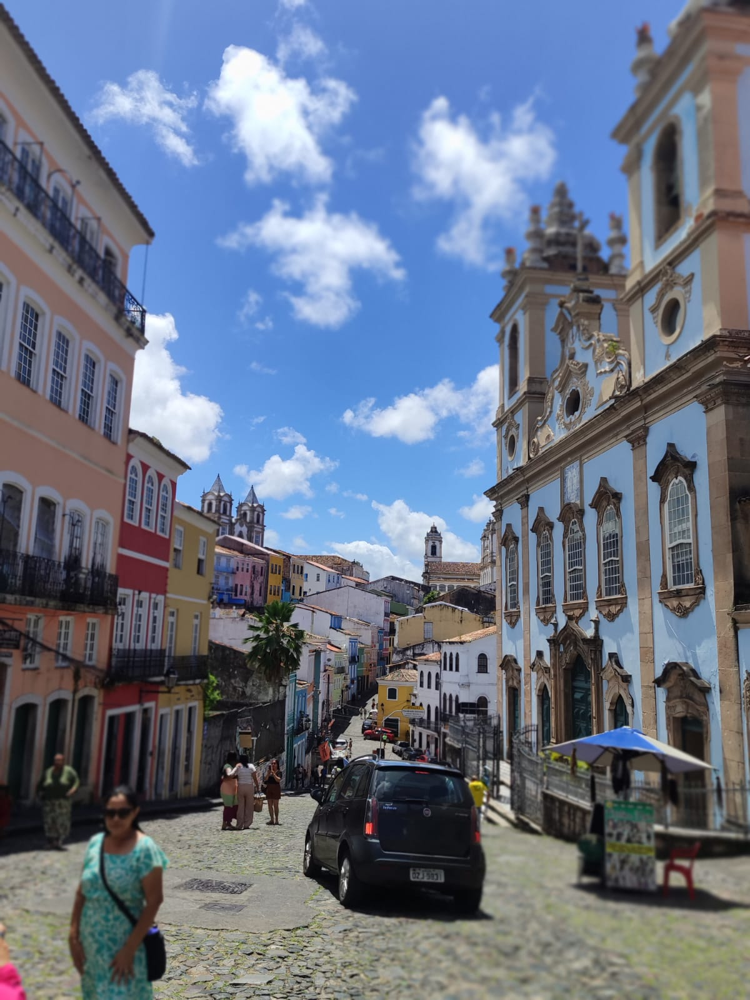
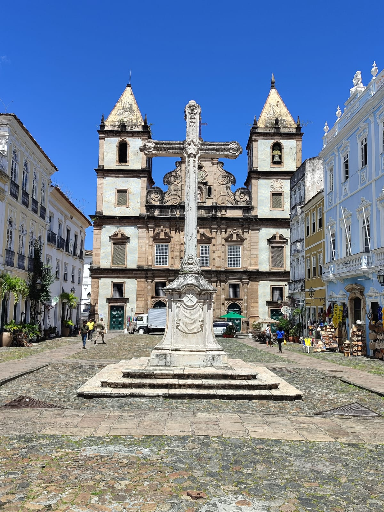
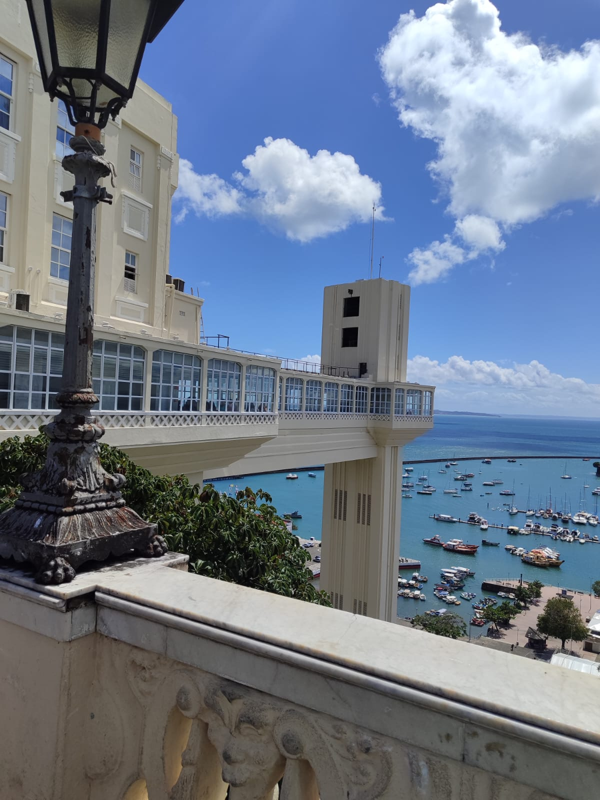
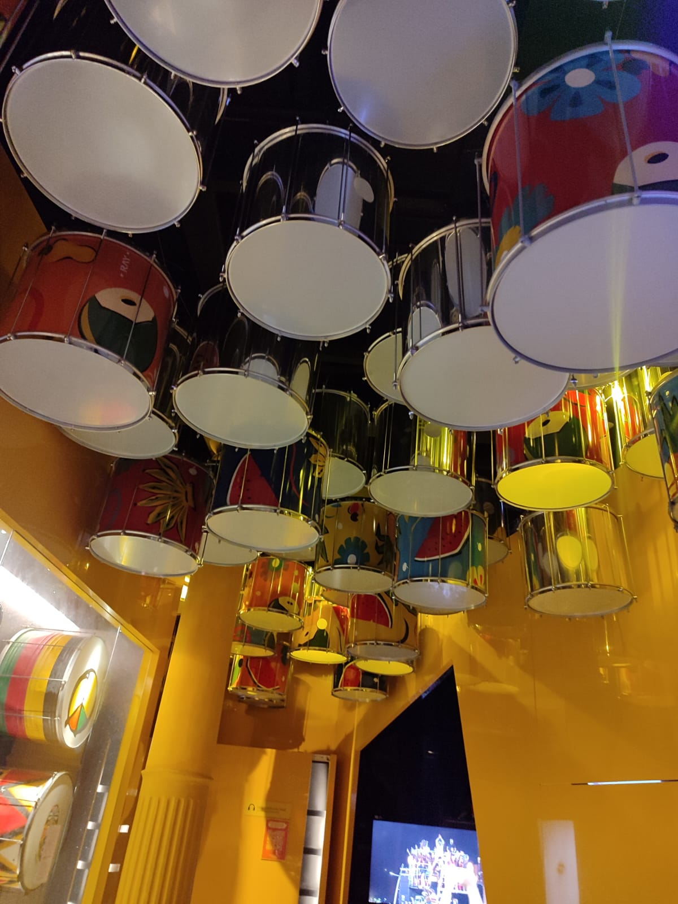
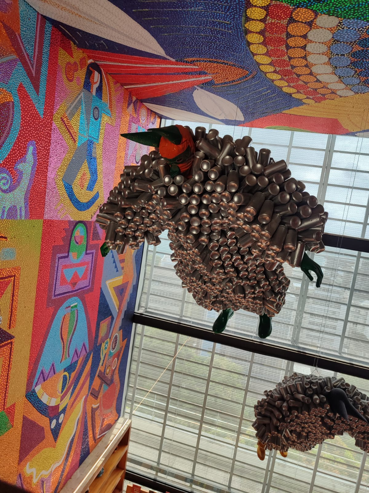
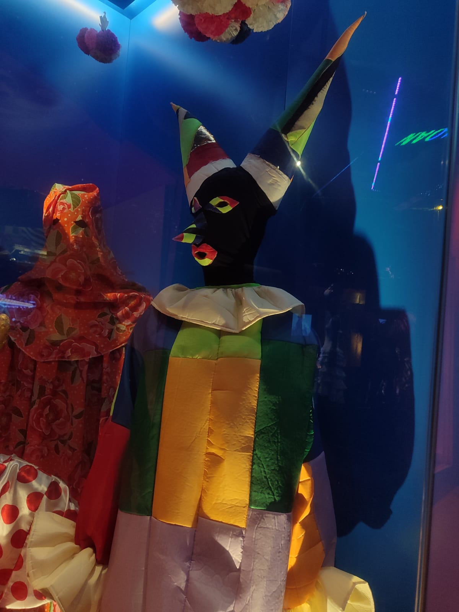

Acervo Fotográfico & Audiovisual
Registros autorais completos do patrimônio histórico, arquitetônico e cultural baiano.
Registro de Campo: Ensaio de Percussão no Pelourinho
Registro audiovisual autoral da prática percussiva nas ruas de Salvador (BA):
Galeria do Acervo (Imagens Íntegras)

Largo do Pelourinho
Centro Histórico de Salvador e arquitetura colonial.

Cruzeiro de São Francisco
Patrimônio arquitetônico e histórico integral.

Elevador Lacerda
Vista para a Baía de Todos os Santos.

Instalação de Tambores
Exposição de percussão no acervo museológico.

Instrumentação Percussiva
Tambores e ritmos da música baiana.

Arte e Indumentária
Obra contemporânea em escultura.

Máscaras e Folclore
Representação das festas populares.

Praça Castro Alves
Painéis e homenagens à cultura popular.

Indumentária Tradicional
Vestimentas e elementos festivos.